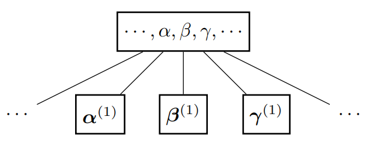

前言
B+树是B树的一个变种, 它把所有卫星数据存储在叶子结点中, 内部结点只存放关键字和孩子指针. 对于B树, 可以参考《算法导论》[1], 这里不再介绍.
首先对B+树做一个定义. 我们这里采用的定义方法可能和网上常见的资料略有差异, 但也无伤大雅. B+树满足以下性质[2]
-
每个结点有以下属性
- : 的关键字个数.
- : 关键字, 以非降序存放. ()
- : 如果是叶子结点, 则为TRUE.
- : 如果是内部结点, 表示孩子指针. ()
- : 如果是叶子结点, 表示卫星数据. ()
- : 的父亲结点.
- : 如果是叶子结点, 则指向下一个叶子结点.
-
令为以为根的子树中的任意关键字. 满足
-
B+树的度数. 这是由叶子结点分裂所要求的.
结点类型 最小关键字个数 最大关键字个数 内部结点 叶子结点 尽管根结点也是一种特殊类型的结点, 但是并没有专门区分的必要. 当树中仅有一个结点时, 它被看作叶子结点. 否则, 看作内部结点.
-
内部结点只存放关键字和孩子指针. 叶子结点只存放关键字和卫星数据.
-
所有叶子结点间用指针串联起来, 构成单向链表.
同时我们做一些约定.
- 对于叶子结点, 我们将和合称为一个记录.
- 对于内部结点, 我们将和合称为一个记录, 并将和分别称为此记录的左孩子和右孩子. 注意, 第个记录的右孩子事实上是第个记录的左孩子.
- 我们用希腊字母来表示内部结点的关键字, 并用小写字母来表示叶子结点的关键字. 其孩子结点或者卫星数据隐含地与关键字相关联.
简单起见, 我们首先规定关键字不可重复. 此时性质2化为性质2’
如果关键字可以重复, 将会造成很大的麻烦. 首要的问题就是选取哪个记录会产生歧义. 文章的最后我们会讨论对于允许关键字重复的无卫星数据 (因此所有关键字相同的记录等价) 的B+树应当怎样修改以维持树的合法性.
以下是一棵度数为4的B+树

搜索
搜索较为简单. 假定我们要搜索的关键字为. 我们从根结点开始, 比较结点的关键字, 并递归地搜索包含的子树. 由性质2’, 我们可以简单地写出以下伪代码
1 | def BPT_SEARCH(x: node, k: key) -> val: |
首先调用辅助过程BPT_SEARCH_LEAF查找在哪个叶子结点里, 其中的小于号是由性质2’决定的. 然后比较叶子结点的关键字, 检查是否存在. 如果找到, 返回相应的卫星数据; 否则, 返回NIL (如果没有卫星数据, 也可以是TRUE和FALSE).
遍历则更为平庸. 由性质5可知, 如果要遍历所有记录, 只需获得首叶子结点, 然后遍历结点和链表即可.
插入
由性质3, 我们可以知道, 叶子结点和内部结点的插入和删除需要单独考虑. 方便起见, 我们分别记叶子结点和内部结点的最小关键字数量为和. 假定我们要插入的记录为.
首先讨论一种平庸的情况. 如果是空树, 那么直接创建一个叶子结点作为根结点, 将记录插在其中即可.
对于非空的树, 我们执行搜索, 检查应当被插在哪个叶子结点中, 并插入记录. 注意此时可能破坏性质3, 即超过了最大允许的关键字数. 这种情况下我们需要分裂叶子结点. 不妨令分裂后的左结点包含个记录, 并将剩余的放在右结点中. 由于新增了一个结点, 我们也需要在其父亲结点插入一个新的记录.
考虑一棵如下所示的子树
我们将叶子结点分裂成了两个. 很明显我们需要在其父亲结点的和中间插入一个记录 (注意同时也表示记录的关键字) 来索引分裂出的叶子结点. 根据性质2’, 应当满足. 显然我们可以把设置为.
同样的, 在父亲结点插入一个关键字也可能违反性质3, 考虑如下的子树

其中, , 是叶子或者内部结点. 不同于我们对叶子结点的分裂, 这里我们直接提升内部结点的中间关键字 (这就是B树的分裂方式. 我们不能对叶子结点这样操作, 因为叶子结点不能被提升为内部结点).
容易看到, 这样分裂后, 并不会违反性质2’. 首先关注和, 它们的左右孩子均没有发生任何变化. 对于, 因为, 因此也符合性质2’.
删除
删除是最为复杂的部分. 倘若叶子结点, 那么我们直接删除记录即可. 否则, 删除后将会违反性质3. 此时, 我们分成两种情况:
- 如果其兄弟结点满足, 那么我们借用其与相邻的记录 (对于左兄弟结点我们借用第个记录, 对于右兄弟结点我们借用第1个记录), 然后我们更新父亲结点来满足性质2’.
- 否则, 我们合并兄弟结点. 此时, 我们需要删除父亲结点中相应的记录.
首先讨论第1种情况. 我们以借用左兄弟结点为例. 借用右兄弟结点也是类似的, 这里不再讨论. 考虑如下子树
由于, 因此借用后会违反性质2’. 因此, 我们需要更新使得. 显然我们可以将其取为.
至于第2种情况, 我们合并和. 根据性质2’, 合并后的结点显然可以作为左侧记录的右孩子和右侧记录的左孩子, 因此我们可以安全地删除.
对于以上第2种情况, 在父亲结点删除一个关键字也可能违反性质3. 我们同样分成两种情况
- 如果其兄弟结点满足, 那么我们做一次旋转.
- 否则, 我们合并兄弟结点. 此时, 我们需要将父亲结点中相应的记录插到两个结点中间.
另外, 我们需要注意, 在这两种情况下, 一个结点的孩子会移交到另一个结点, 因此我们需要更新孩子结点的属性.
首先讨论第1种情况. 同样的, 我们以借用左兄弟结点为例. 另一种情况是对称的, 这里不再赘述. 考虑如下子树
如果我们只是简单地把交给右结点 (自然也包含它的右孩子), 显然这会导致错误, 因为此时变为了的左孩子.
为了解决这个问题, 我们将原先操作修正为旋转, 如下图所示
左侧结点的最右记录提升到父亲结点中, 并将原先父亲结点的记录下降到右侧结点 (即做了一次右旋).
由性质2’, 可以正确地作为的左孩子. 提升为父亲结点也不会违反此性质, 因为. 因此, 旋转操作维持了性质2’.
第2种情况, 我们需要下移父亲记录是因为每个内部结点有着个孩子结点. 如果直接合并, 孩子结点个数变为个, 这将会违反性质3. 因此我们需要一个额外的关键字, 而两个兄弟结点的父亲记录显然是合适的. 考虑如下子树
下降与左右孩子合并. 此时, 的左孩子为, 右孩子为. 这显然维持了性质3和性质2’.
允许关键字重复的情况
我们可以看到, 如果关键字可以重复, 使用上文所述的方法将会出问题. 考虑结点, 以及的前驱. 有. 接下来我们考虑的情况.
我们仍然借用上图进行说明. 将看作, 因此前驱就是. 此时和并非兄弟结点. 在内部结点分裂时显然我们有, 因此在搜索时, 我们始终转向的右子树, 从而无法访问前驱中关键字为的记录, 即便随后中的关键字为的记录全部被删除.
下面我们提出解决方案.
当改变时, 必须更新它与前驱的最低公共祖先 (这是内部结点的一个记录), 使得在后, , 从而能正确地转向左子树搜索. 很明显我们可以将取为.
而我们在上文所述的不允许关键字重复的B+树事实上始终严格满足, 因此无需更新.
参考文献
Thomas H. Cormen, Charles E. Leiserson, Ronald L. Rivest, and Clifford Stein. (2013, January). Introduction to Algorithms (3rd ed.). China Machine Press. ↩︎
Wikipedia contributors. (n.d.). B+ tree. Wikipedia. Retrieved June 26, 2024. B+ tree - Wikipedia ↩︎